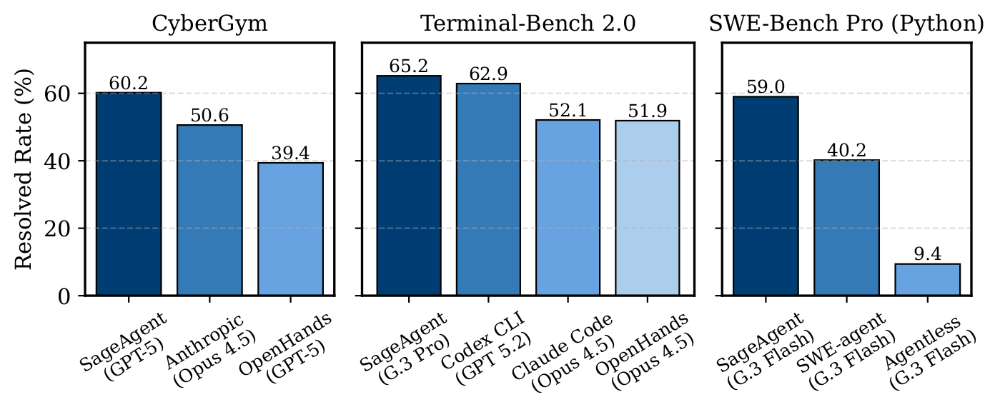
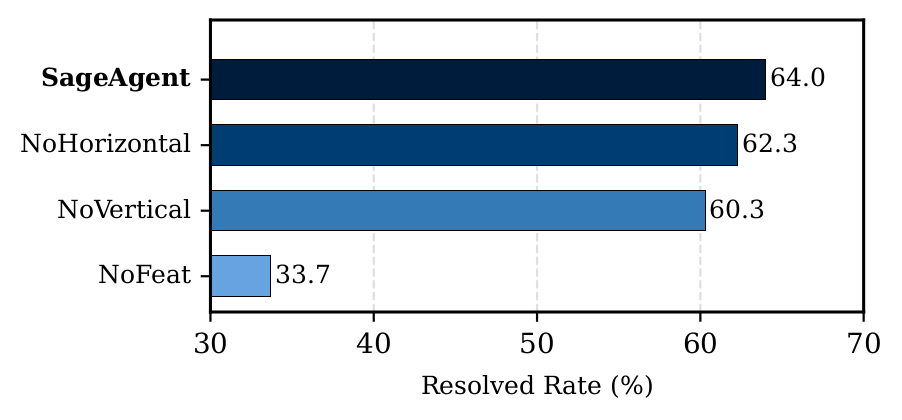
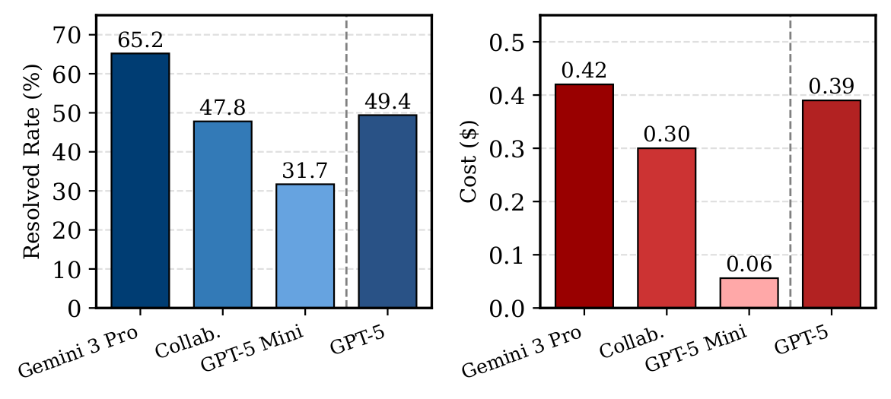
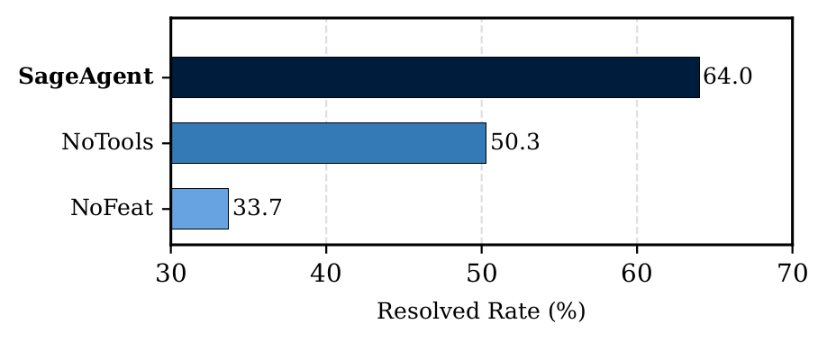
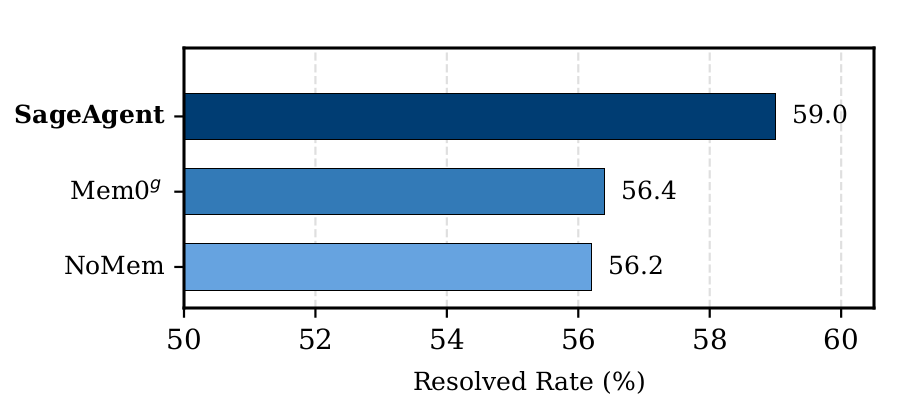

OpenSage: Self-Programming Agent Generation Engine
From Human-Centered to AI-Centered Agent Development
AI agents are experiencing explosive growth, but their construction still relies heavily on human expertise. Current state-of-the-art ADKs, including Google ADK, OpenAI ADK, Claude ADK, OpenHands, and LangChain, provide basic infrastructure but require developers to manually design three core architectural components:
- Agent topology: The structure, hierarchy, and interaction patterns between agents
- Tooling system: The tools agents can use and how they're organized
- Memory system: What information to store, how to structure it, and when to retrieve it
This human-centered paradigm has fundamental limitations:
- Scalability: Substantial human effort and domain expertise required for each new agent
- Generalizability: Fixed structures cannot dynamically adapt across different tasks
- Effectiveness: Human-designed architectures may not be optimal for AI reasoning
This human-centered paradigm mirrors early machine learning, where models depended on hand-crafted features and carefully engineered pipelines. We argue that agent development is now at a similar turning point: instead of manually designing agent structures and capabilities, we should move toward an AI-centered paradigm, where a base "agent scaffold" is provided and the AI itself learns how to organize topology, tools, and memory from experience and feedback.
Motivated by this shift, we introduce OpenSage (Open Self-programming Agent Generation Engine), an Agent Development Kit that allows AI systems to automatically create agent topologies, synthesize and manage tools, and control hierarchical memory for context storage and retrieval.
As Table 1 shows, existing ADKs stop short of AI-centered agent development, while OpenSage closes the gap across topology, tools, and memory.
Table 1: OpenSage vs. state-of-the-art ADKs (• full support; ◐ partial/limited; ○ not supported).
| Category | Feature | OpenSage | Google ADK | OpenAI ADK | Claude ADK | OpenHands | LangChain |
|---|---|---|---|---|---|---|---|
| Topology | AI-created topology | • | ○ | ○ | ○ | ○ | ○ |
| Topology | Agent management | • | ◐ | ◐ | ◐ | ◐ | ◐ |
| Topology | Agent ensemble | • | ○ | ○ | ○ | ○ | ○ |
| Tool | AI-written tools | • | ○ | ○ | ◐ | ○ | ○ |
| Tool | Tool management | • | ○ | ○ | ◐ | ◐ | ○ |
| Memory | AI-created memory | • | ○ | ○ | ○ | ○ | ○ |
| Memory | Graph-based structure | • | ○ | ○ | ○ | ○ | ○ |
| Memory | AI-driven management | • | ○ | ○ | ○ | ○ | ○ |
What is OpenSage?
OpenSage (Open Self-programming Agent Generation Engine) is the next-generation Agent Development Kit (ADK) that shifts control from humans to AI. It is designed around three critical components:
- Self-generating agent topology
- Dynamic tool synthesis and management
- Hierarchical, graph-based memory with a memory agent

Instead of manually wiring agent structures, tools, and memory, OpenSage provides a minimal but powerful scaffold that lets LLMs autonomously construct and adapt agent systems.
1. Self-Generating Agent Topology
OpenSage enables agents to dynamically create, execute, and terminate sub-agents during task execution. All agents are managed in a unified sub-agent pool with tools for searching, listing, running, and resuming agents. Each sub-agent maintains its own short-term memory and has access to shared long-term memory; sub-agents can themselves create more sub-agents, enabling rich hierarchical structures. This mechanism enables various agent topologies based on different tasks, where two types are most commonly seen:
- Vertical topology: Decomposing complex tasks into sequential sub-tasks handled by specialized sub-agents
- Horizontal topology: Multiple sub-agents simultaneously execute the same task using different plans, with results integrated through an agent ensemble
2. Dynamic Tool Synthesis
OpenSage empowers AI to construct and manage its own tools:
- Tool creation: Agents can write new tools (Python modules, Bash scripts, etc.) and register them into a hierarchical, file-system-based structure with metadata describing interfaces and dependencies
- Tool management: Tool-specific container-based execution isolation supports heterogeneous tools with conflicting dependencies, while a shared workspace enables data sharing across containers
- Asynchronous execution: Agents can decide to run selected tools in the background (especially long-running ones like compilation and static analysis) while continuing to reason and call other tools; the agent monitors execution status and retrieves results when ready
- Domain-specific toolkit: Built on the capabilities above (tool creation, management, and sandboxed async execution), OpenSage integrates a suite of software engineering and security tools (e.g., CodeQL, Joern, AFL/libFuzzer, coverage tooling, GDB/PDB). Without these capabilities, integrating and running such a heterogeneous tool suite reliably within one framework would be impractical.
3. Hierarchical Memory
OpenSage features a graph-based memory system with AI-driven management:
- Short-term memory: Execution history is stored as a graph in Neo4j, where each agent execution corresponds to an AgentRun node, and each sub-agent's AgentRun is linked to its parent's AgentRun, forming a hierarchical structure. Step-level tool calls and responses are stored as Event nodes, linking to their corresponding AgentRun nodes. Summarizations are linked to nodes that contain the corresponding unsummarized content. We provide graph-based retrieval tools that allow agents to inspect past executions, traverse related events, and recover unsummarized outputs as needed.
- Long-term memory: High-level, shareable knowledge is stored as a Neo4j graph of entities (functions, files, Q&A items, etc.) and typed relationships, with embeddings attached to node labels to support semantic retrieval. We expose tools that let agents retrieve, insert, and update graph nodes and edges.
- Memory agent: A dedicated agent mediates access to both short- and long-term memory. Other agents issue natural language requests, and the memory agent interprets them and carries out the appropriate memory operations.
Key Results
OpenSage Outperforms on All Benchmarks
We evaluated OpenSage on three diverse benchmarks with various backbone models:
- CyberGym (1,507 real-world C/C++ vulnerabilities): Tests agents' ability to reproduce security vulnerabilities by crafting proof-of-concepts in containerized environments, emphasizing self-generating agent topology and specialized tooling.
- Terminal-Bench 2.0 (89 expert-curated tasks): Evaluates agents across diverse domains (SWE, scientific computing, ML) under realistic, resource-constrained terminal environments.
- SWE-Bench Pro (266 Python tasks): Assesses long-horizon software engineering tasks that require extensive context maintenance and retrieval.

Key findings:
- On CyberGym, SageAgent with GPT-5 medium achieves 60.2% resolved rate, ranks first with the same model, outperforming OpenHands even when OpenHands uses GPT-5 with higher reasoning effort.
- On Terminal-Bench 2.0, SageAgent reaches 65.2% resolved rate, achieves the best result under the same backbone model (Gemini 3 Pro).
- On SWE-Bench Pro (Python), under the same backbone model (Gemini 3 Flash), SageAgent achieves 59.0%, far above SWE-agent (40.2%) and Agentless (9.4%).
These results show that OpenSage-based agents (SageAgent) consistently outperform state-of-the-art agents and ADKs across heterogeneous, challenging benchmarks.
Self-Generating Topology Makes a Difference
We conducted ablation studies on a 300-instance CyberGym subset to evaluate the impact of agent topology:
- NoHorizontal: Disables agent ensemble (no horizontal topology)
- NoVertical: Disables dynamic sub-agent creation (no vertical topology)
- NoFeature: Disables all OpenSage features (no topology, no advanced tooling)

Removing vertical topology leads to a substantial performance drop: without dynamic sub-agent creation, context frequently exceeds the window, triggering more summarization (the average number of summarization events per task increases from 6.4 to 13.1) and causing greater information loss. Horizontal topology via agent ensembles is also effective: on the 27 tasks where it is triggered, the ensemble resolves 15% more instances, indicating its effectiveness.
Large-Small Model Collaboration
OpenSage's flexible topology also supports heterogeneous model setups. On Terminal-Bench 2.0, we evaluated a collaboration pattern where a strong model (Gemini 3 Pro) handles planning and review, while a smaller model (GPT-5 Mini) performs detailed execution:

This setup substantially improves accuracy over GPT-5 Mini alone, matches GPT-5's performance, and reduces cost relative to running Gemini 3 Pro or GPT-5 end-to-end.
Tooling System Powers Complex Tasks
Ablating the tooling system on the same CyberGym subset highlights its critical contribution:
- NoTools: Replaces the entire tooling system with a raw terminal interface
- NoFeature: Disables both tooling and self-generating topology

With the full tooling system, agents do not rely solely on initially provided security specific tool set. They also create new tools at runtime. On this 300-instance subset, agents created 39 task-specific tools written in Python and C/C++, including:
- Grammar-aware fuzzers
- Seed generation and mutation utilities
- File-format-specific input generators
Memory System Enables Long-Horizon Reasoning
We evaluated three memory configurations on SWE-Bench Pro:
- SageAgent: Full hierarchical memory with memory agent (OpenSage design)
- Mem0g: Integrates Mem0g's graph memory
- NoMem: No explicit external memory mechanism

OpenSage's memory design achieves a 59.0% resolved rate, compared to 56.4% for Mem0g and 56.2% for NoMem. The improvement comes from:
- AI-controlled decisions about what to persist and how to organize knowledge
- Combined embedding-based and graph-based retrieval to surface the most relevant context
- Tailored node and edge types for coding tasks, while still allowing the agent to create new types and extend the schema.
These results show that simply adding a graph memory is not enough; AI-centered memory management is key for long-horizon software engineering tasks.
Observed Agent Behaviors
Across experiments, we observe rich self-programming behaviors:
- Dynamic sub-agent creation: Backbone models actively create sub-agents for distinct sub-tasks with synthesized system prompts and focused toolsets (e.g., dedicated debugging agents).
- Autonomous tool writing: Agents construct task-specific tools, including grammar-aware fuzzers and format-specific seed generators for fuzzers, instead of relying solely on general-purpose tools.
- Intelligent memory usage: The memory agent selectively persists high-signal information and leverages graph-based retrieval to avoid redundant queries and keep context focused.
At the same time, we see that current models do not always use these advanced features optimally: in some cases, the invocation frequency of these capabilities remains low; models may forget to reuse existing agents or memory, create sub-agents with mismatched toolsets or hallucinate tools. This highlights a capability gap: OpenSage's AI-centered features are effective, but stronger models will be needed to fully exploit them.
Looking Forward
OpenSage represents a fundamental shift in how we build AI agents, from human-centered, hand-crafted pipelines to AI-centered, self-programming agent systems. By providing a minimal but expressive scaffold for topology, tools, and memory, OpenSage enables LLMs to autonomously explore and construct more capable agent architectures.
Future directions include:
- AI-generated workflows: Allowing agents to generate full multi-stage workflows with AI-decided dependencies and communication patterns among different agents.
- Integrated training support: Running large-scale rollouts on Kubernetes-backed sandboxes for RL-style post-training and finetuning.
Our goal is for OpenSage to be not only an agent construction framework, but also a training scaffold for next-generation reasoning models. We see it as the foundation of an AI-centered paradigm, where AI can design, coordinate, and refine agents through interaction and feedback. Looking forward, we envision systems that can autonomously instantiate the right agents for a task and drive them to completion, unifying agent construction and problem solving within a single, AI-centered loop.
If you find this blog useful, we would appreciate it if you could cite our work:
@misc{li2026opensageselfprogrammingagentgeneration,
title = {OpenSage: Self-programming Agent Generation Engine},
author = {Hongwei Li and Zhun Wang and Qinrun Dai and Yuzhou Nie and Jinjun Peng and Ruitong Liu and Jingyang Zhang and Kaijie Zhu and Jingxuan He and Lun Wang and Yangruibo Ding and Yueqi Chen and Wenbo Guo and Dawn Song},
year = {2026},
eprint = {2602.16891},
archivePrefix= {arXiv},
primaryClass = {cs.AI},
url = {https://arxiv.org/abs/2602.16891},
}